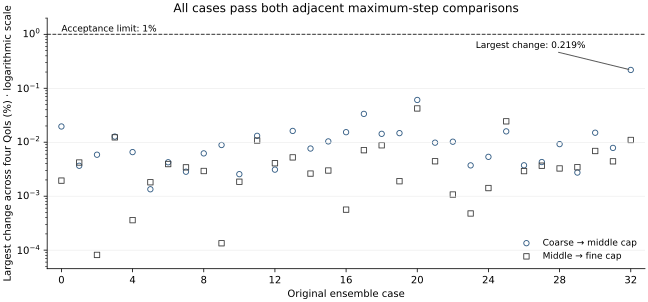

Physical-residual solves and ensemble convergence
all 33 original cases reach five seconds at all three maximum-step settings: 99 of 99 valid trajectories and 264 of 264 passing endpoint comparisonsC-305. the largest changes are 0.219% for coarse-to-middle and 0.0423% for middle-to-fine, both below the 1% acceptance limitC-306. The successful result uses the continuous transport closure described below. The original hard-switch study and the historical uncertainty report retain their original outcomes. Production defaults have not been silently replaced.
Continuous closure and a strict solve
The experimental integration addresses three distinct failure mechanisms: a discontinuous transport closure near admissibility boundaries, an iteration whose stabilization can change its nonlinear target, and unsuccessful proposals being allowed to advance a state. The completed method combines closure regularization with a strict native Newton solve and adaptive rollback (the new research baseline uses a continuous guarded closure, Newton trials accepted only after residual decrease, and adaptive rollback of the complete state and auxiliary dataC-304). The final test does not isolate a single change as the cause of success.
Let \(c_s\) be an admissible surrogate coefficient and \(c_f\) the existing fallback. For a normalized margin \(m\) into an accepted domain, define
\[ S(z)=\begin{cases}0&z\leq0,\\z^2(3-2z)&0<z<1,\\1&z\geq1.\end{cases} \qquad c=c_f+w(c_s-c_f). \]
The weight is a product of smooth margin factors for the model input box, wrapper box, low heat coefficients and coefficient caps. It vanishes when the declared guard test on the actual candidate rejects it. Invalid surrogate values are masked to finite fallback before multiplication, so zero weight cannot carry an inadmissible NaN into the result. The original model weights and admissible domains stay fixed. This changes the closure near its boundaries; continuity is not permission to extrapolate outside the guard.
Particle transport also needs a smooth handover between its diffusion and convection representations. The candidate uses complementary weights around the existing normalized density-gradient threshold. Both coefficient branches remain finite before blending. Native radial coefficient smoothing stays fixed in the ensemble test. A local conversion identity does not prove that later coefficient smoothing and finite-volume interpolation preserve particle flux. A direct particle-flux formulation has not been used for this pass.
The implicit time step uses the native unstabilized finite-volume residual. Newton differentiates that residual and solves its linearized system. Its line search accepts a finite trial only when the actual residual decreases by the declared Armijo rule. Failure retains the previous accepted Newton iterate and returns failure metadata. An optimizer’s termination or a native status flag alone does not establish physical acceptance.
Physical acceptance and rejected-step rollback
For each evolving physical channel, retain cell terms \(s\), \(t\) and \(q\) for storage, transport and combined sources, with cell widths \(\Delta\rho_j\). The independent auditor reconstructs
\[ \eta_k=\frac{\sum_j|s_{jk}-(t_{jk}+q_{jk})|\,\Delta\rho_j} {\sum_j(|s_{jk}|+|t_{jk}|+|q_{jk}|)\,\Delta\rho_j}. \]
The terms are grouped before normalization exactly as in the declared physical equation. Finite positive reference scales are required. Separate global balance ratios include storage, edge flux, sources and pinning. The exact native residual is retained independently of these physical channel ratios. Acceptance requires all channel gates, global balance, finite profiles, positive temperatures and density, finite quantities of interest and a successful solver flag. An explicit sawtooth reset stops this validation. maximum accepted physical-channel L1 is 1.76 × 10−9 against a 10−8 gate, and native mean L1 is 1.01 × 10−14 against 10−10; no crash occursC-307.
Pseudocode for the research adapter:
save the complete old state and auxiliary post-processing data
propose a native implicit step no larger than the current maximum
record raw cell terms, native residual, profiles and acceptance fields
if every scientific gate passes: commit state and auxiliary data
otherwise: restore both, halve the proposal, retain the rejection
stop if the minimum step or attempt budget is exhausted
recover the step gradually, never beyond the declared maximum372,141 accepted proposals and 2,659 rejected proposals are retained in 23,100 raw chunks; rejected-step rollback and retry schedules pass reconstructionC-308. The raw auditor checks the retry schedule and cross-step profile continuity, including rejected old-state identity. Accepted density representations receive only the documented floating-point conversion allowance; rejected old-state drift remains a failure. Complete auxiliary-state rollback is enforced by the frozen retry source and synthetic controls. Per-trial profile records alone do not independently certify every auxiliary leaf.
The reusable opt-in module has an older global-only acceptance helper. The successful ensemble instead uses the frozen research runner.py and advance.py, which add the channelwise and native residual gates and stop on an event. A caller of the reusable module does not automatically inherit this full validation protocol.
Declared numerical parameters
| Component | Frozen setting |
|---|---|
| Native solve | backward Euler starts from the old state, disables Pereverzev stabilization, allows 40 Newton iterations and uses an internal native stop of 10−14; Armijo decrease uses 10−4, step halving and an outer-iteration continuation threshold of 2−40C-309 |
| Continuous transition | input and wrapper transitions span 10−4 of their stored ranges, the low heat-coefficient fade spans 0.01 m²/s, upper-cap fades use 1% of the cap, and the particle switch spans 10% of its existing thresholdC-310 |
| Retry and reporting | each macro step allows 64 proposals down to one 4096th of its maximum step, rejects by halving and recovers by at most doubling; common reporting times are 0.1, 0.4, 1, 3, 4.25 and 5 secondsC-311 |
| Scientific acceptance | maximum accepted physical-channel L1 is 1.76 × 10−9 against a 10−8 gate, and native mean L1 is 1.01 × 10−14 against 10−10; no crash occursC-307 |
The numerical solver stop is distinct from the scientific physical acceptance threshold. Neither is relaxed after seeing an endpoint comparison. Transition widths are declared model parameters; their fixed values in this experiment do not establish width robustness.
Full ensemble protocol and result
all 33 original cases reach five seconds at all three maximum-step settings: 99 of 99 valid trajectories and 264 of 264 passing endpoint comparisonsC-305. The declared maximum steps are halved successively while holding the continuous closure, its transition widths, radial smoothing, original case design and ensemble member assignment fixed. Every trajectory starts from its own prescribed initial state. Saved complete state/post checkpoints restart reporting stages without substituting profile-only states.
At the common final time, compute for each quantity \(Q\)
\[ \delta_Q(h,h/2)=\frac{|Q_h-Q_{h/2}|}{\max(|Q_{h/2}|,\operatorname{tiny}_{64})}. \]
Both adjacent pairs must pass for fusion power, stored thermal energy, and axis electron and ion temperature. This is sensitivity to an adaptive maximum step; actual accepted internal steps can be smaller. It is not an estimate of fixed-step order or an exact-solution bound. the largest changes are 0.219% for coarse-to-middle and 0.0423% for middle-to-fine, both below the 1% acceptance limitC-306.

Figure provenance
- Tier: A; measured public ITER numerical scenario.
- Producer:
blog.figures.make_m5_convergence; source2563ca4(dirty at generation: True). - Configuration SHA-256:
e31a1147b1db7c07480ccc9231f77c9035097dd62236414a9e3a74897475ef92. - Bound raw-audit SHA-256:
50b76a04bd897bbd7154a1a299623f7c6b499bfada9bf2827dba959a944c99b6. - Python 3.11.7; JAX 0.10.2; CPU saved-array audit.
- Recorded: 2026-11-01. No new simulation was run to plot this figure.
| Evidence | Earlier hard-switch study | Current continuous baseline |
|---|---|---|
| Temporal result | One pair passes; finer pair fails (C-298) | Both adjacent pairs pass (C-306) |
| Native status | Zero fixed-work flags do not certify residual convergence (C-292) | Explicit native and physical acceptance (C-307) |
| Invalid trials | Historical records retain their original scope | Complete rollback and retained rejections (C-308) |
These columns have different closures, solver policies and step ladders. They summarize the change in evidence; they are not a controlled time-step-only before/after attribution. Earlier failed claims remain historical facts.
The combined audit separately verifies scheduler completion, source/input hashes, worker identities, complete case coverage, raw step integrity and endpoint data. Its equation reconstruction is independent of the solver’s accept/reject scalar, but it shares the declared discrete model. The native kernel is not a second independent physical model. Numerical corruption tests reject false residuals, missing cases, changed endpoints and incomplete comparisons.
What the pass changes
The current baseline meets its full ensemble numerical gate. The earlier checkpoint-only statement that no complete convergence study exists is now superseded by this result. The checkpoint damping and learned-selector sections below remain the history that led to the classical method; no learned solver benefit is claimed.
The next uncertainty/sensitivity propagation must explicitly adopt this baseline and retain its complete sampling design. The earlier uncertainty outputs were not silently rerun. Matched smoothing-width studies, derivative behavior and any direct particle-flux prototype are separate work. Physical-model acceptance and M5 physicist sign-off remain pending. Reverse-mode differentiation through the adaptive retry decisions is unsupported; this pass does not validate gradients.
Narrative companions: strict solve and closure and full ensemble result.
Earlier checkpoint experiments
The following sections describe the earlier fixed-context experiments, not the current completed trajectory protocol.
Checkpoint controller
The independent same-state operator audit identifies a discrete stabilization contribution from convection interpolation. This is distinct from the observed surrogate/fallback alternation. Damping can change iteration behavior while preserving the stabilized map’s different nonlinear target.
Let A denote the current stabilized implicit matrix. Let R be storage minus the physical transport/source equation, evaluated at the same state and complete pre-step context. Scale R by the same transient coefficients and time step used in its physical theta equation. A correction direction solves
A(x) delta = -s_physical(x) R_physical(x).
x_trial = x + alpha delta.For nonsingular A and nonzero transient scale, a zero direction requires a physical root. This target-preservation identity is not a convergence theorem. The original transport model, guard, boundary conditions and sources stay fixed.
The prototype compares original Picard, fixed damping, residual backtracking, regularized Anderson and physical-defect backtracking. All trials start from the same checkpoint guess. Complete old/new canonical state leaves preserve context; profile-only records are never treated as restarts. No trial advances a canonical trajectory. Separate thermal, density and flux residuals retain their units.
Each channel’s reference scale is its initial cell-width integral of absolute storage, combined transport RHS, and combined source/pinning RHS. Freeze that scale during the solve. Candidate merit is the largest normalized channel L1 residual. Reject invalid or insufficiently decreasing candidates. Undefined reference scales remain explicit failures. Algorithmic residual tolerances do not replace the unchanged endpoint temporal criterion.
The learned component classifies a finite grid of damping factors. Inputs contain separate physical/stabilized residual norms, recent branch change, distance to the surrogate domain and time step. Complete classical search grids produce labels; a failed grid has no class label. Whole-case holdouts govern direction selection, feature normalization and fitting. An explicit training input box routes unfamiliar inputs to classical backtracking. Residual checks decide every accepted proposal and every convergence flag.
Focused controls cover cycling, biased stabilized roots, absent physical roots, unit scaling, failed proposals and data separation (focused numerical, data-separation and short TORAX checks pass; early-time full-step labels validate plumbing, not learned benefit or a numerical remedyC-302). Short real-code checks retain canonical trace and predictor/corrector parity. These early-time examples have only full-step labels and establish no learned benefit. At that checkpoint, the full late experiment remained prepared for review. The later complete trajectory result is reported above; it uses the classical strict solve and a changed continuous closure, without a learned damping policy.
Related work includes neural fixed-point acceleration and solver-in-the-loop training. This prototype uses classical rollout labels and held-out controller rollouts; it does not train end to end through the discontinuous guard. The cited demonstrations do not establish guarantees for this transport equation.
Narrative companion: entry 96, private draft.
Retained compensation and damping results
The later fixed-context comparison retains original Picard, compensated updates and half-damped compensated updates. The finer-stage execution failed one historical storage comparison after saving all trial records. Small changes in pre-subtraction operands are consistent with cancellation amplifying the observed storage difference. The original failed gate is not waived or relabelled a pass. Separate dense/FV reconstruction checks the retained physical targets, unrelaxed linear solves, actual relaxation updates and guard selections.
The passing coarse-stage cycling example has a lower physical residual under compensation and a further reduction with half damping (at the matched passing coarse cycling checkpoint, the electron residual is 9.148% originally, 6.885% after compensation and 2.228% with half damping; nominal states can converge more slowly with dampingC-303). At nominal checkpoints the corrected undamped map reduces that residual faster. These are finite fixed-old-state comparisons, not new trajectories or endpoint error estimates. Fine-stage comparisons remain qualified diagnostic evidence.
A separate small selector uses only the passing coarse stage and holds out each whole case. Initial physical/stabilized channel residuals and the domain-boundary margin are inputs; later residuals supply labels only. The output selects one fixed damping factor for the entire retained update budget. It is not an adaptive per-iteration controller. The held-out choices provide no reliable advantage over the full-step compensated baseline, and most unfamiliar inputs use that baseline.
Do not construct per-iteration action labels by pairing equal iteration indices from the two fixed-alpha paths: those paths have different states. Actual paired action evaluations and branch histories are needed before learning an adaptive policy. Compensated residual backtracking is the next classical comparison.